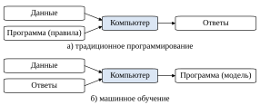
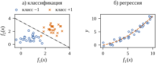
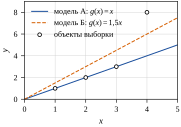

1 Задача обучения по прецедентам
В этой главе вводятся основные понятия: объект, признак, ответ, модель, функция потерь и эмпирический риск. Обучение модели сводится к задаче оптимизации — найти параметры, при которых средняя ошибка на известных примерах минимальна; остальные главы по-разному решают именно эту задачу.
1.1 Что такое машинное обучение
Перед выпуском новой версии программы тестировщики не успевают одинаково тщательно проверить все модули программы. Хочется заранее знать, в каких модулях ошибки наиболее вероятны. Обычно пишут правила, например: «модуль подозрителен, если в нём больше тысячи строк и за месяц его меняли больше десяти раз». Но пороги в таких правилах взяты на глаз, а когда проект изменится, правила устареют.
Машинное обучение предлагает другой подход. В системе контроля версий и трекере задач хранится история: для каждого модуля прошлых версий известно, сколько в нём было строк, как часто его меняли и нашли ли в нём ошибки после выпуска новой версии программного продукта. Компьютер получает эти примеры и сам находит зависимость между характеристиками модуля и наличием ошибок. Результат обучения — программа (модель), которая выдаёт прогноз для нового модуля. Разница подходов показана на рис. 1.1: в традиционном программировании человек пишет правила, а компьютер выдаёт ответы; в машинном обучении человек даёт примеры с ответами, а компьютер находит правила.

Для инженера удобно определение Т. Митчелла [1]: программа обучается на опыте E относительно задачи T и меры качества P, если её качество в задаче T, измеренное мерой P, растёт с накоплением опыта E.
Чтобы воспользоваться этим определением, нужно явно указать все три составляющие. В примере с модулями программы задача T — предсказать, будет ли в модуле найдена ошибка; опыт E — модули прошлых версий программы, для которых уже известно, нашли ли в них ошибки после выпуска; мера качества P — например, доля верных прогнозов. Пока не названы T, E и P, задача обучения не поставлена.
Машинное обучение — раздел искусственного интеллекта, но не синоним «разумной машины»: это математические методы восстановления зависимостей по примерам. Модель знает о предметной области только то, что содержится в данных.
1.2 Объекты, признаки и ответы
Перейдём к формальной постановке. Обозначим через X множество объектов — то, о чём мы делаем прогноз (модули программы, заявки на кредит, квартиры), а через Y — множество ответов (есть ли ошибка, вернёт ли заёмщик кредит, сколько стоит квартира); объект x \in X, ответ y \in Y. Считается, что существует неизвестная зависимость \varphi \colon X \to Y, и для каждого объекта x его ответ y = \varphi(x).
Сама зависимость неизвестна, зато известны ответы на конечном наборе объектов — обучающей выборке
X^\ell = (x_i, y_i)_{i=1}^{\ell}, \quad y_i = \varphi(x_i),
где \ell — число объектов в выборке. Пары (x_i, y_i) называют прецедентами, отсюда название задачи и этой главы. Требуется построить функцию, которая приближает \varphi не только на объектах выборки, но и на новых объектах: запомнить известные ответы легко, трудно не ошибаться на объектах, которых модель не видела.
Компьютер не умеет работать с модулем программы или квартирой напрямую. Объект описывают набором признаков — функций f_j \colon X \to D_j, j = 1, \ldots, n, каждая из которых сопоставляет объекту одно значение из множества D_j. По множеству значений различают четыре типа признаков:
- бинарный, D_j = \{0, 1\}: есть ли у модуля автоматические тесты;
- номинальный, D_j конечно и не упорядочено: язык программирования, на котором написан модуль;
- порядковый, D_j конечно и упорядочено: приоритет компонента программы (низкий, средний, высокий);
- количественный, D_j = \mathbb{R}: число строк кода, цикломатическая сложность, число изменений за месяц.
Тип признака определяет, какие действия с ним осмысленны: количества строк кода в разных модулях можно складывать, языки программирования — нет; приоритеты можно сравнивать, но не вычитать. Как перевести признаки всех типов в числа, описано в гл. 2.
Набор значений всех признаков объекта x_i называют его признаковым описанием и записывают вектором \mathbf{x}_i = (f_1(x_i), \ldots, f_n(x_i)). Значение j-го признака на i-м объекте для краткости обозначают x_{ij} = f_j(x_i). Важно различать объект x_i (модуль программы) и его признаковое описание \mathbf{x}_i (вектор чисел): модель машинного обучения видит объект только через признаки.
Описания всех объектов выборки складывают в матрицу объекты–признаки
\mathbf{F} = \bigl(f_j(x_i)\bigr)_{\ell \times n} = \begin{pmatrix} f_1(x_1) & \ldots & f_n(x_1) \\ \vdots & \ddots & \vdots \\ f_1(x_\ell) & \ldots & f_n(x_\ell) \end{pmatrix}.
Строка матрицы — один объект, столбец — один признак. Ответы образуют
вектор \mathbf{y} = (y_1, \ldots,
y_\ell)^{\mathrm{T}}. В программах на Python матрицу
объекты–признаки обычно называют X, а вектор ответов —
y. Пример выборки из пяти модулей приведён в табл. 1.1.
| Модуль | Строк кода, f_1 | Цикломатическая сложность, f_2 | Изменений за месяц, f_3 | Есть тесты, f_4 | Ответ y |
|---|---|---|---|---|---|
| x_1 | 120 | 4 | 2 | 1 | −1 |
| x_2 | 850 | 23 | 15 | 0 | +1 |
| x_3 | 400 | 12 | 3 | 1 | −1 |
| x_4 | 1500 | 31 | 9 | 1 | +1 |
| x_5 | 300 | 9 | 11 | 0 | +1 |
Здесь y = +1 означает, что после выпуска новой версии программы в модуле нашли ошибку, y = -1 — что не нашли. Матрица \mathbf{F} для этой выборки имеет размер 5 \times 4, а, например, x_{22} = f_2(x_2) = 23.
1.3 Типы задач
Тип задачи определяется множеством ответов Y.
Классификация — множество ответов конечно, каждый ответ означает класс. При Y = \{-1, +1\} это бинарная классификация (пример с модулями); при Y = \{1, \ldots, K\} — классификация на K непересекающихся классов (определить компонент, к которому относится сообщение об ошибке). Если объект может принадлежать сразу нескольким классам, ответ записывают вектором из нулей и единиц, Y = \{0, 1\}^K: сообщение об ошибке может касаться одновременно интерфейса и базы данных.
Регрессия — ответ числовой, Y = \mathbb{R}: сколько часов уйдёт на задачу, сколько стоит квартира. Если нужно предсказать сразу несколько чисел (например, координаты объекта), Y = \mathbb{R}^m.
Ранжирование — важен порядок объектов: какие документы показать выше в поисковой выдаче. На рис. 1.2 показаны две основные задачи: в классификации модель ищет границу между классами, в регрессии — кривую, проходящую ближе к точкам.

Во всех этих задачах ответы на обучающих объектах известны — это обучение с учителем. Если ответов нет и требуется найти структуру в самих объектах (разбить на группы похожих, описать меньшим числом признаков), говорят об обучении без учителя; здесь оно не рассматривается.
1.4 Модель и метод обучения
Зависимость ищут в заранее выбранном семействе функций. Модель — это параметрическое семейство функций
A = \{ g(x, \boldsymbol{\theta}) \mid \boldsymbol{\theta} \in \Theta \},
где g — фиксированная функция, а \boldsymbol{\theta} — вектор параметров из множества допустимых значений \Theta. Выбрать модель — значит выбрать вид функции; обучить модель — значит найти конкретные значения параметров.
Рассмотрим линейную модель. Для задачи регрессии она имеет вид
g(x, \boldsymbol{\theta}) = \sum_{j=0}^{n} \theta_j f_j(x) = \theta_0 + \theta_1 f_1(x) + \ldots + \theta_n f_n(x).\tag{1.1}
Здесь добавлен фиктивный признак f_0(x) = 1, чтобы свободный член \theta_0 записывался той же суммой, что и остальные слагаемые.
Читаем формулу. Каждый признак умножается на свой вес \theta_j, и произведения складываются. Вес показывает, на сколько изменится прогноз, если признак увеличится на единицу, а остальные останутся прежними; знак веса говорит о направлении влияния. Свободный член \theta_0 — прогноз для объекта, у которого все признаки равны нулю. Пусть, например, трудоёмкость задачи в часах оценивается по двум признакам: f_1 — число файлов, которые придётся изменить, f_2 = 1, если задача добавляет в программу новую функциональность, и 0 иначе. При параметрах \boldsymbol{\theta} = (2; 0{,}5; 3) задача, затрагивающая 10 файлов и добавляющая новую функциональность, оценивается в 2 + 0{,}5 \cdot 10 + 3 \cdot 1 = 10 часов.
Сумма в (1.1) — скалярное произведение векторов параметров и признаков (включая f_0 = 1), её коротко записывают как \langle \boldsymbol{\theta}, \mathbf{x} \rangle.
Для бинарной классификации с ответами \pm 1 линейная модель получается из той же суммы взятием знака:
g(x, \boldsymbol{\theta}) = \operatorname{sign} \sum_{j=0}^{n} \theta_j f_j(x).
Функция \operatorname{sign} возвращает +1 для положительного аргумента и -1 для отрицательного, то есть одну из двух меток класса. Поэтому классы удобно обозначать -1 и +1.
Параметры находит метод обучения \mathcal{M} — алгоритм, который по обучающей
выборке вычисляет вектор параметров: \mathcal{M}(X^\ell) = \boldsymbol{\theta}. На
этапе обучения метод \mathcal{M} подбирает параметры по выборке
X^\ell, на этапе применения
модель вычисляет прогнозы g(x,
\boldsymbol{\theta}) для новых объектов; в библиотеке
scikit-learn этим этапам соответствуют методы fit и
predict.
Кроме параметров, есть гиперпараметры — величины, которые задают до обучения и которые метод обучения сам не подбирает. Например, набор признаков: в задаче о модулях программы какие характеристики модуля учитывать (число строк кода, сложность, частоту изменений), решает человек, а веса при них находит метод \mathcal{M}. Другой пример — степень d, если зависимость ищут в виде многочлена \theta_0 + \theta_1 x + \ldots + \theta_d x^d: коэффициенты \theta_j — параметры, а d — гиперпараметр. Гиперпараметры подбирают, сравнивая качество моделей на данных, не участвовавших в обучении.
1.5 Функция потерь и эмпирический риск
Чтобы выбрать лучшие параметры, нужно уметь измерять, насколько модель ошибается. Функция потерь \mathcal{L}(g, x) — это величина ошибки модели g на одном объекте x: она тем больше, чем сильнее прогноз g(x, \boldsymbol{\theta}) отличается от правильного ответа y = \varphi(x). Самые распространённые функции потерь:
- для классификации — индикатор ошибки \mathcal{L}(g, x) = [g(x, \boldsymbol{\theta}) \ne y];
- для регрессии — абсолютная ошибка \mathcal{L}(g, x) = |g(x, \boldsymbol{\theta}) - y| и квадратичная ошибка \mathcal{L}(g, x) = (g(x, \boldsymbol{\theta}) - y)^2.
Квадратные скобки обозначают индикатор: [A] = 1, если утверждение A истинно, и 0, если ложно.
Ошибку на одном объекте усредняют по всей выборке. Получается эмпирический риск:
Q(\boldsymbol{\theta}, X^\ell) = \frac{1}{\ell} \sum_{i=1}^{\ell} \mathcal{L}(g, x_i).\tag{1.2}
Читаем формулу. Знак суммы с индексом i от 1 до \ell означает: пройти по всем объектам выборки и сложить их потери; множитель 1/\ell превращает сумму в среднее. С индикатором ошибки Q — доля неверных ответов, с квадратичной потерей — средний квадрат ошибки. Эмпирический риск зависит от параметров \boldsymbol{\theta}: изменили параметры — изменились прогнозы, а с ними и потери.
Теперь обучение можно записать как задачу оптимизации — найти параметры, при которых эмпирический риск минимален:
\mathcal{M}(X^\ell) = \arg\min_{\boldsymbol{\theta} \in \Theta} Q(\boldsymbol{\theta}, X^\ell).\tag{1.3}
Этот принцип называют минимизацией эмпирического риска. Запись \arg\min означает не само наименьшее значение Q, а тот вектор \boldsymbol{\theta}, при котором оно достигается. Если модель линейная, а потеря квадратичная, получается метод наименьших квадратов, которому посвящена гл. 3.
Потеря и функционал качества. Величину, по которой при обучении выбирают параметры, называют функционалом качества и обозначают буквой Q — от англ. quality. Она сопоставляет каждой модели одно число — насколько хорошо модель описывает всю выборку. Слово «функционал» означает, что аргумент Q — сама модель, то есть функция g. Когда вид модели выбран, модель задаётся параметрами, поэтому пишут Q(\boldsymbol{\theta}, X^\ell). Эмпирический риск — самый распространённый функционал качества, но не единственный: в вероятностных моделях, например, максимизируют вероятность получить наблюдаемые ответы.
Функцию потерь и функционал качества часто путают, тем более что названия у них похожи и в разных книгах разные (табл. 1.2); в англоязычной литературе функционал качества часто называют функцией стоимости (cost function) и обозначают буквой J. Различие простое: потеря — ошибка на одном объекте, функционал качества — одно число для всей выборки, обычно средняя потеря. Если ошибки модели на трёх объектах равны 1, −2 и 0, квадратичные потери — три числа, 1, 4 и 0, а эмпирический риск — одно число, (1 + 4 + 0)/3 = 5/3. Обучение оптимизирует именно функционал качества: уменьшить потерю на одном объекте легко, но ценой роста потерь на других.
| Характеристика | Функция потерь | Функционал качества |
|---|---|---|
| Что измеряет | ошибку на одном объекте | качество модели на всей выборке |
| Обозначение | \mathcal{L}(g, x_i) | Q(\boldsymbol{\theta}, X^\ell), J(\boldsymbol{\theta}) |
| Другие названия | потеря, loss | эмпирический риск, полная (средняя) потеря, функция стоимости; total loss, cost function, objective |
| Пример | (g(x_i, \boldsymbol{\theta}) - y_i)^2 | \frac{1}{\ell} \sum_{i=1}^{\ell} (g(x_i, \boldsymbol{\theta}) - y_i)^2 — среднеквадратичная ошибка |
Путаницу усиливают библиотеки: в программах словом loss часто называют уже усреднённое по выборке значение, то есть функционал качества. Встретив слово «потеря», полезно проверить, о чём речь — об одном объекте или обо всех сразу.
Пример. Выбор функции потерь — не формальность: от него зависит, какая модель окажется лучшей. Пусть выборка состоит из четырёх объектов с одним признаком (табл. 1.3), причём последний объект выбивается из общей закономерности. Сравним две модели: A: g(x) = x и Б: g(x) = 1{,}5x (рис. 1.3).
| x | y | Прогноз A | Ошибка A | Прогноз Б | Ошибка Б |
|---|---|---|---|---|---|
| 1 | 1 | 1 | 0 | 1,5 | 0,5 |
| 2 | 2 | 2 | 0 | 3 | 1 |
| 3 | 3 | 3 | 0 | 4,5 | 1,5 |
| 4 | 8 | 4 | −4 | 6 | −2 |

С абсолютной потерей эмпирический риск модели A равен (0 + 0 + 0 + 4)/4 = 1, модели Б — (0{,}5 + 1 + 1{,}5 + 2)/4 = 1{,}25; лучше модель A. С квадратичной потерей риск модели A равен (0 + 0 + 0 + 16)/4 = 4, модели Б — (0{,}25 + 1 + 2{,}25 + 4)/4 = 1{,}875; лучше модель Б. Квадрат сильно увеличивает большие ошибки, поэтому квадратичная потеря «тянет» модель к выбросу, а абсолютная почти не обращает на него внимания. Какая модель правильнее, зависит от задачи: если выброс — ошибка измерения, предпочтительна модель A; если такие значения действительно встречаются и занижать прогноз для них дорого — модель Б.
Однако важна ошибка не на обучающей выборке, а на новых объектах. Среднюю потерю по всем возможным объектам называют риском; её нельзя вычислить, потому что неизвестны ни \varphi, ни распределение объектов. Обычно предполагают, что объекты выборки и будущие объекты получены независимо из одного распределения. Тогда средняя потеря на новых данных — разумная оценка риска, а эмпирический риск на обучающей выборке её занижает: параметры подобраны именно под эти объекты. Как оценить ошибку на новых объектах, рассказано в гл. 5.
1.6 Постановка задачи на практике
Постановка начинается с четырёх вопросов. Что предсказываем и какое решение примут по прогнозу (какие модули программы проверить первыми)? Какой это тип задачи (предсказание дефекта — классификация, оценка трудоёмкости — регрессия)? Какие данные доступны в момент прогноза и откуда взять ответы (метрики кода, история изменений, сведения об ошибках из трекера)? Как измерять качество? Мера качества должна отражать реальную цель: если пропустить модуль с ошибкой дороже, чем лишний раз его проверить, доля верных ответов — плохая мера.
Постановка неудачна, если признаки не связаны с ответом: по цвету подсветки синтаксиса в редакторе не предсказать ошибки в модуле, а по номеру квартиры не определить её цену. Никакой метод не извлечёт информацию, которой нет в данных, — «мусор на входе, мусор на выходе».
Обучение модели — лишь один этап решения прикладной задачи машинного обучения. Обычно работа над такой задачей включает следующие стадии: постановка задачи; сбор и подготовка данных (гл. 2); построение простой базовой модели для сравнения (baseline); выбор основной модели, её обучение и подбор гиперпараметров; проверка качества на данных, не участвовавших в обучении (гл. 5 и 8); внедрение; наблюдение за качеством в работе. Данные со временем меняются, модель устаревает, и цикл повторяется.
Вопросы для самоконтроля
- Назовите задачу T, опыт E и меру качества P для задачи оценки трудоёмкости.
- Чем объект отличается от его признакового описания?
- Чем параметры модели отличаются от гиперпараметров? Приведите по два примера.
- Почему эмпирический риск на обучающей выборке занижает ошибку модели на новых объектах?
- Что меняется при замене абсолютной функции потерь на квадратичную?
Задачи
Для выборки из табл. 1.1 вычислите эмпирический риск с индикатором ошибки для классификатора g(x) = \operatorname{sign}(f_2(x) - 10), который считает подозрительными модули со сложностью больше 10.
Ответ
модель ошибается на x_3 и x_5, Q = 2/5 = 0{,}4.
Для выборки из табл. 1.3 найдите параметр \theta модели g(x) = \theta x, минимизирующий эмпирический риск с квадратичной потерей. Указание: приравняйте к нулю производную Q по \theta.
Ответ
\theta = \sum x_i y_i / \sum x_i^2 = 46/30 \approx 1{,}53 — почти модель Б.